Econ 5120 Macroeconomic Theory
Chpt 14: GFC and Chpt 15: DSGE
Introduction
High frequency data
GFC and Short Run
DSGE Models
JOLTS

Chapter 14: GFC Short-Run
Financial frictions: Despite fed funds rate going from 5% to ~0%, the interest rate at which households and firms could borrow was higher than before the crisis.
These financial frictions can be offset by lowering target rate, but there is a zero lower bound. Which led to unconventional monetary measures.
AS/AD suited for normal times, use IS/MP/PC for GFC.
Deflation: Holding the nominal interest rate constant \(\implies\) deflation raises real interest rates. Can lead to a vicious cycle.
Faced with zero fed funds and deflation, the fed used unconventional policies: TARP, QE, and fiscal spending.
Financial Frictions
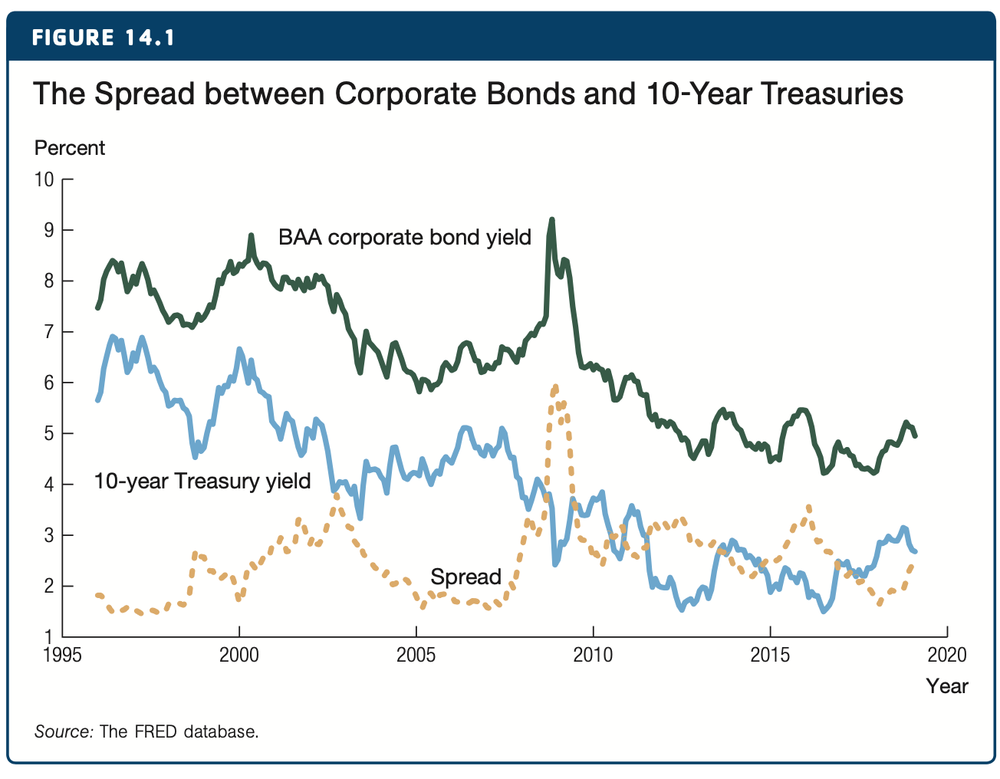
In normal times the Fed effectively sets the real interest rate. This is the rate that households and firms borrow at.
Solvency and liquidity worries led to financial frictions.
The spread between government securities and the interest rate that firms and households pay increased.
10 year treasuries were ~6% below investment grade “medium” risk paper.
Source: Macroeconomics, Jones, 2021
Financial Frictions
We incorporate this into our short-run model: \(R=R^{ff}+\bar{f}\).
\(\bar{f}\) represents the exogenous risk premium that sits between the fed funds rate \(R^{ff}\) and the real interest rate that firms borrow in financial markets.
During normal times \(\bar{f} =0\).
Leads to investment shock to the IS curve.
Source: Macroeconomics, Jones, 2021
GFC Shock to IS Curve
Financial frictions: Fears over solvency and liquidity led to financial frictions.
This led to interest rate spikes and a stock market downturn, in addition to the housing market downturn.
Interest rates spiked resulting in a 30% decline in investment, \(\bar{a}_i \downarrow\).
Stock and housing market declines reduced wealth and consumption leading to \(\bar{a}_c \downarrow\).
IS/MP Framework
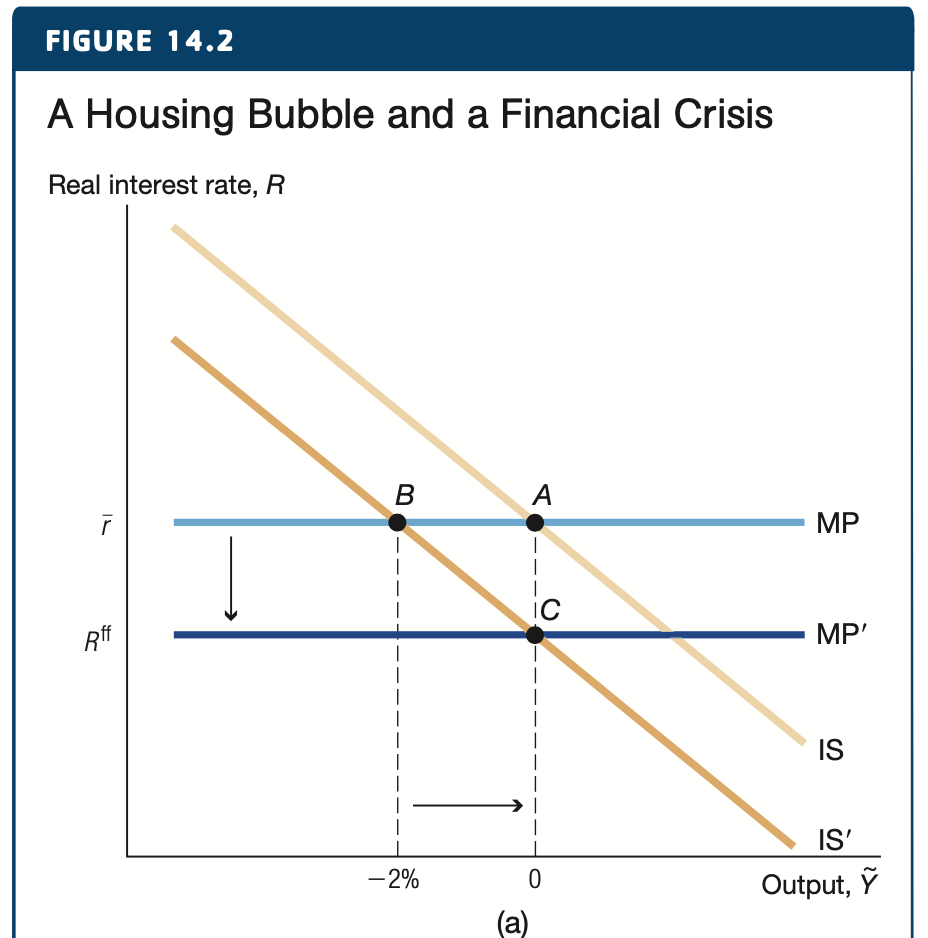
In normal times an negative aggregate demand shock will shift the IS curve down. (from IS to IS’).
In response the central bank will lower the fed funds rate, \(R^{ff}\), below the MPC, \(\bar{r}\).
This will shift output back to potential, eliminating the recession.
Source: Macroeconomics, Jones, 2021
IS/MP Framework
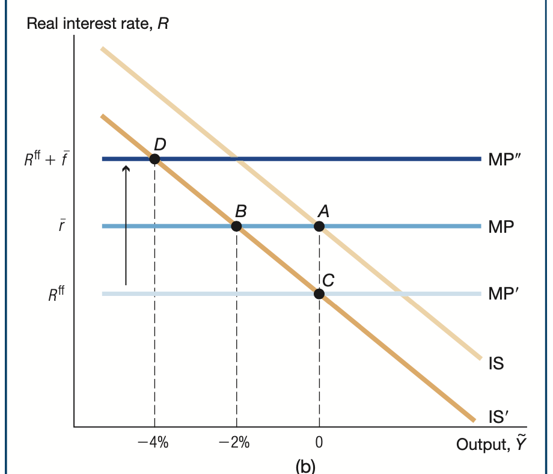
During the GFC the Fed lowered the fed funds rate, which should have increase output.
Households and firms saw an interest rate of \(R^{ff} + \bar{f}\) .
Despite the Fed’s actions the economy saw an even deeper recession.
The fed lowered to zero, but still did not stimulate the economy.
Fed then took non conventional measures.
Source: Macroeconomics, Jones, 2021
AS/AD Framework
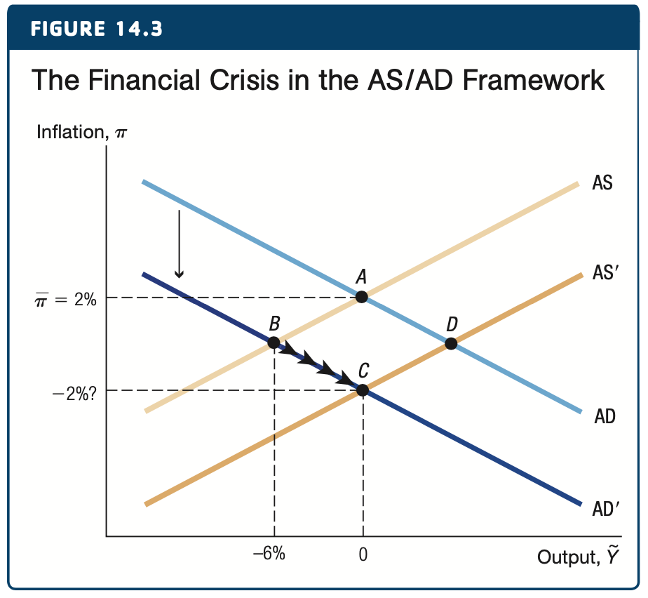
IS Curve: \(\tilde{Y} = \bar{a} - \bar{b}(R_t - \bar{r})\)
Monetary Policy Rule: \(R_t^{ff}-\bar{r}=\bar{m}(\pi_t-\bar{\pi})\)
Financial Friction: \(R_t=R_t^{ff} + \bar{f}\)
Combining financial friction with monetary policy: \(R_t-\bar{r}=\bar{f}+\bar{m}(\pi_t-\bar{\pi})\)
The new AD curve: \(\tilde{Y}=\underbrace{\bar{a}-\bar{b}\bar{f}}_{AD\:shock}-\bar{b}\bar{m}(\pi_t - \bar{\pi})\)
- Financial friction acts similar to an AD shock.
Deflation.
Source: Macroeconomics, Jones, 2021
Covid-19 Spreads
Deflation
Fisher equation: \(i_t=R_t+\pi_t\)
Rearrange: \(R_t = i_t -\pi_t\)
If \(\pi < 0\) then real interest rate increases.
Central banks normally respond to \(\bar{a}\downarrow\) by \(i \downarrow\).
1930’s Great Depression
Fed did not lower \(i\) because of fear of asset bubbles, deflation increase \(R\) sharply.
In 1933 the Fed lowered rates and economy turned around.
Deflation
What if we have deflation coupled with a low nominal interest rate?
The Fed faces a zero lower bound on \(i\).
- Imagine \(i=0\), \(R_t=-\pi_t\).
- Deflation \(\implies R_t \uparrow\)
Household and firms investment:
If MPC is 1%, and inflation is 3%, investment.
If MPC is 1% and inflation is -3%, no investment.
Deflation - Liquidity Trap
Deflation coupled with a zero nominal interest rate causes a liquidity trap.
Firms and households do not want to borrow. Liquidity is trapped inside the banks and will not stimulate the economy.
Theoretically at this point currency and bonds are the same.
Other unconventional solutions:
Japan has engaged in extensive open market operations for the past 20 years.
Fed tripled balance sheet.
Neither has had the recovery that was hoped for.
Deflationary Spiral
Recession causes deflation.
Deflation raises \(R\).
Recession deepens.
Causes more deflation.
Deflation Remedies
Fiscal stimulus
Unconventional monetary policy
Manage \(\pi^e\)
Taylor Rule
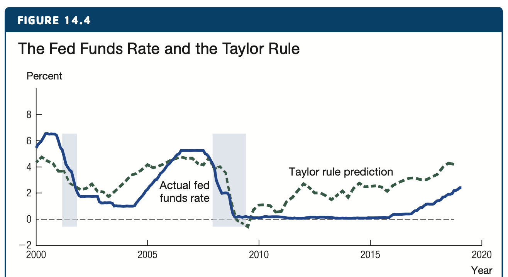
Taylor rule is more sophisticated thank the monetary policy rule from last chapter.
Short-run output level also influences the setting of the Fed Funds rate.
During crisis monetary policy appears to be expansionary (lying close or below the Taylor rule), however, financial frictions \(\implies\) misleading.
Pre 2008 Fed Funds were kept low for too long + global savings glut.
Source: Macroeconomics, Jones, 2021
Taylor Rule
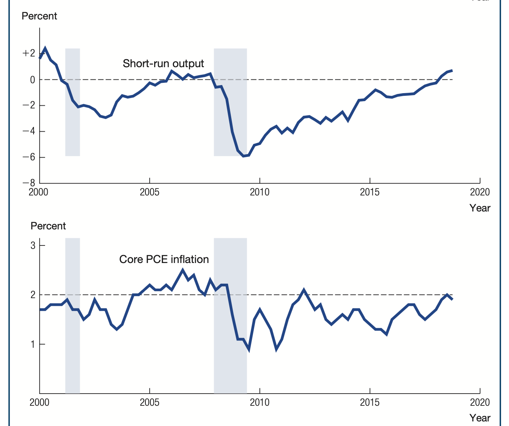
Pre 2008 Fed Funds were kept low for too long + global savings glut (house prices high).
- This had to do with the concern of deflation in 2001 and 2002.
Short-run output was negative until 2018 (lost generation).
- Or was it potential output?
Source: Macroeconomics, Jones, 2021
Potential Output
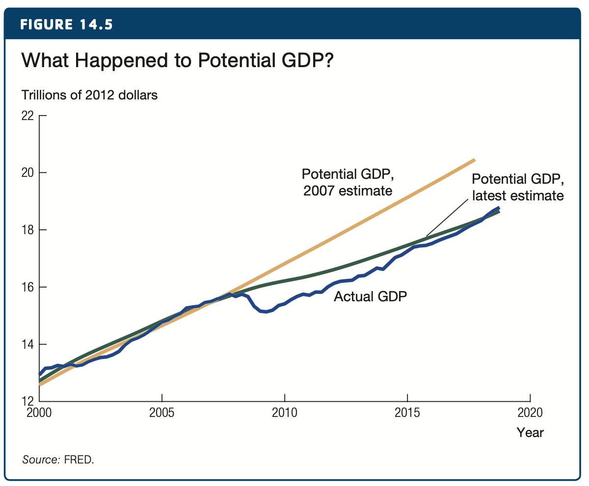
Taylor rule showed us that fed funds should be above zero since 2010.
- Does not account for financial frictions.
Taylor rule has to do with short-run models of the economy.
Potential GDP estimates for 2007 vs latest.
Closing of the output gap occurred primarily because potential GDP decreased, not actual GDP returning to its trend.
Source: Macroeconomics, Jones, 2021
Potential Output
Recall that the CBO computes potential GDP based on an extended Solow model.
Investment rates have been low following the financial crisis - this contributes to a lower potential GDP.
We will also see that productivity rates has slowed considerably - also contributing to a lower potential GDP.
Did the GFC change firms’ desire to make long term investments? How are short term and long term features of the economy held together?
Source: Macroeconomics, Jones, 2021
Money Supply
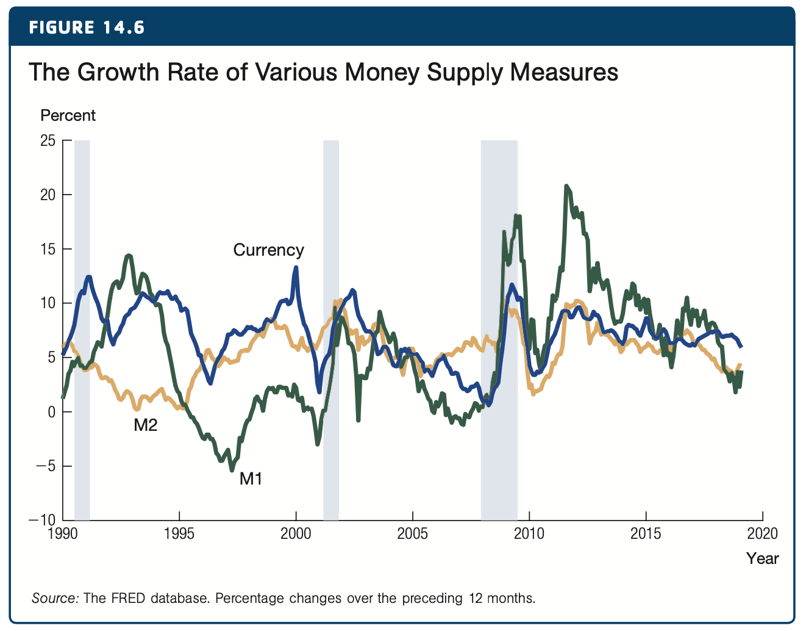
Friedman: Great depression partly caused by deflation as a result of tight monetary policy.
Money supply declined between 1929 and 1933.
Bernanke in 2002 discussed Friedman’s research saying “Your are right, we did it… but thanks to you we won’t do it again.
In 2008 and 2009 there was rapid growth in money supply.
Helped avoid deflation
Targeted +2% \(\bar{\pi}\) .
Bernanke was true to his word.
Source: Macroeconomics, Jones, 2021
Fed’s Balance Sheet
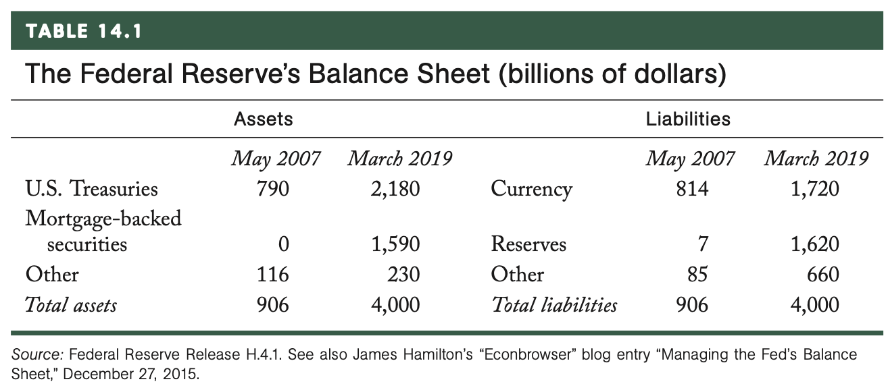
Conventional monetary policy failed to stimulate the economy.
Fed and treasury created new policies to provide liquidity and capital to financial institutions.
Swap less liquid instruments for treasury securities.
Providing liquidity to large govt sponsored mortgage companies: Fannie Mae & Freddie Mac.
Direct capital injections through the TARP.
Source: Macroeconomics, Jones, 2021
Fed’s Balance Sheet
2007:
Assets: Mostly US Treasuries
Liabilities: Mostly US Currency
2019:
Five times as large at $3.5 Trillion
Composition of assets and liabilities changed.
Asset side: lending not only to banks, but to other institutions. Loans or commercial paper. (Other)
Mortgage backed securities
Source: Macroeconomics, Jones, 2021
Assets in the Fed
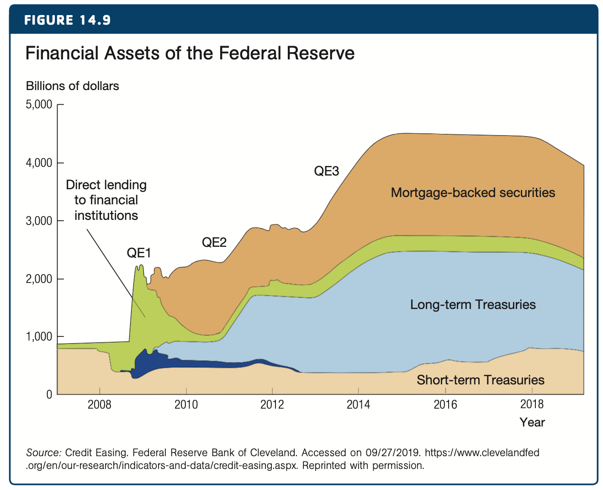
Programs where the central bank buys assets other than short term govt bonds are known as quantitative easing (QE).
2008-2009: QE1 - Fed purchased nearly $1T in mortgage-backed securities (MBS)
2010: QE2 - Fed purchased $600B in long-term treasuries.
2012-2015: QE3 - Bed purchased $1.5T in MBS and long-term treasuries.
Source: Macroeconomics, Jones, 2021
Liability side of the Fed
Currency was increased somewhat, but most of the liabilities were parked in reserves of financial institutions.
For the most part the financial institutions kept the money in reserves instead of lending them out.
Worried about financial risk (stress tests, Basel 2&3 capital requirements)
Fed started paying interest on reserves.
By adjusting the interest rate the Fed could control how much was lent out.
QE1 is largely credited for helping avoid depression.
Further QE actions had less impact (same as 1/4% cut in FF rate, 1.25% change in employment).
Source: Macroeconomics, Jones, 2021
TARP
Troubled Asset Relief Program (TARP) passed by congress in the fall of 2008 established a fund to be used by the Treasury.
$700B fund used to buy and insure assets from troubled financial institutions.
Funds ultimately used to purchase equity in banks, guarantee loans to those institutions and even bail out US autos.
- 97% was returned to treasury by 2012.
Fiscal Stimulus
American Recovery and Reinvestment Act of 2009
$787B package designed to stimulate aggregate demand in the economy.
$250B in tax cuts
$500B in new govt spending on unemployment, infrastructure, education, health care, and aid to state and local govts.
CBO estimates $185B in 2009, $400B in 2010.
Deficit rose to 10% of GDP.
Financial Reform - Moral Hazard
Financial institutions were able to use $3 of their money and $97 of borrowed money to purchase risky assets.
In 2008 MBS were the risky asset.
When the MBS market turned bad, these companies were deemed too big to fail and were bailed out.
What should happen? Bankruptcy. Equity holders lose everything and bond holders get a portion of the liquidated company.
2008 all big banks were in trouble. Lehman Brothers went bankrupt which led to panic.
Financial Reform
Enhance capital requirements: typically around 7% if increased the stability of financial institution improves.
Systemic Regulator: Enforces financial reform.
Executive Compensation linked to Long-Term Performance: Claw-backs/deferred comp.
Require convertible debt: bonds could convert to equity if certain crisis conditions were met. Puts the risk on the owners of the firm.
Living wills - Some firms will fail, a plan for their assets and liabilities if that should happen.
Secular Stagnation
2014 Larry Summers proposed that secular stagnation might have taken hold in western economies.
Combination of slow economic growth, low inflation, and negative real interest rates.
Global savings glut with a decline in demand for investment.
Increased supply of saving and shift back in demand for investment could lead to negative equilibrium real interest rate.
Low investment can lead to low capital accumulation in a Solow model leading to slow growth.
Slow recovery!
Productivity Slowdown
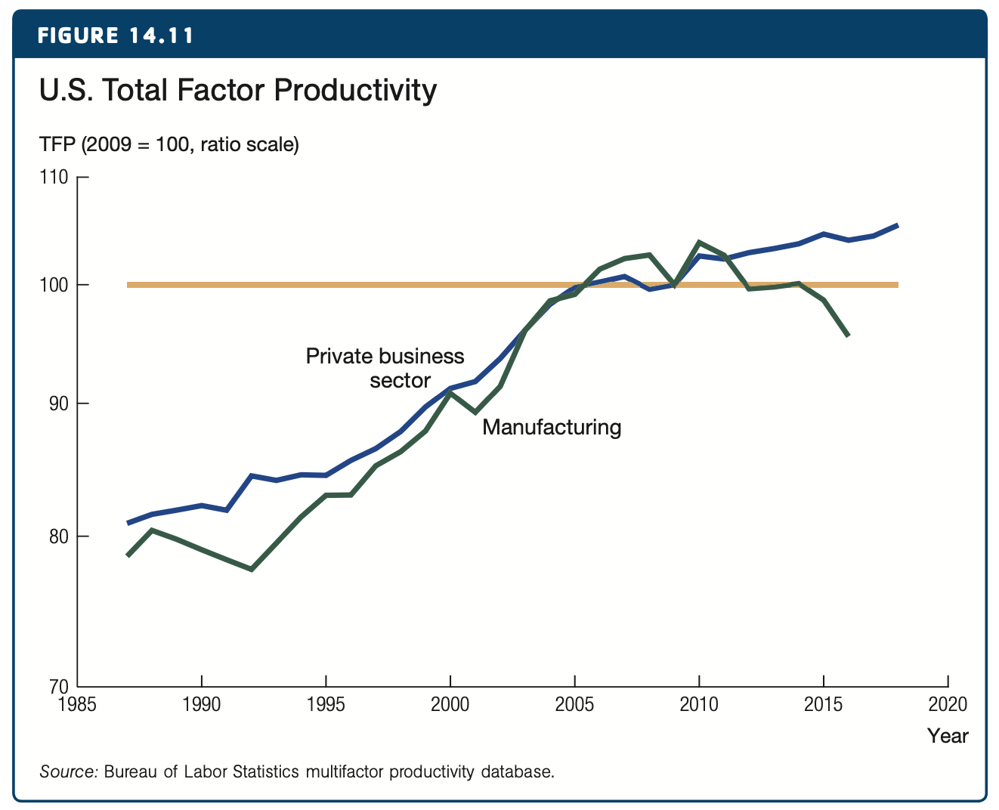
- Alternative or complementary explaination for the slow recovery is the level of TFP.
- Since 2004 TFP has been low, averaging just:
0.5% in the private business sector
-0.3% in manufacturing
- Businesses with great ideas in GFC were constrained by investment
- R&D spending growth was higher before 2000 now it is flat.
Source: Macroeconomics, Jones, 2021
Conclusion
The direct cost of bailing out financial institutions was only a small portion of overall costs.
The bulk of the costs were borne by people outside the finance industry
Main cost is measured in jobs lost and forgone GDP; inflicted around the world.
Financial reforms and lessons learned should help avoid another balance sheet crisis.
DSGE Models
DSGE Models- Dynamic Stochastic Generalized Equilibrium Models
Frontier of macro-economic fluctuations (shocks and their effects).
First DSGE models were real business cycle models, such as modified Solow models. Demonstrated that TFP shocks could lead to business cycle like fluctuations
Labor market block of the models shows immediate impact of shocks.
Permanent income hypothesis holding provides a good bridge to consumption dynamics.
Sticky vs flexible prices lead to different conclusions and DSGE models.
Estimating models is beyond this class but DSGE models can show similar dynamics as AS/AD models. With more detail.
DSGE Motivation
Economists have long been puzzled by the observations that during peacetime industrial market economies display recurrent, large fluctuations in output and employment over relatively short time periods. . . . These observations should not be puzzling, for they are what standard economic theory predicts. For the United States, in fact, given people’s ability and willingness to intertemporally and intratemporally substitute consumption and leisure and given the nature of the changing production possibility set, it would be puzzling if the economy did not display these large fluctuations in output and employment.
-Edward C. Prescott
DSGE Models
Micro-foundations for macro-models and fluctuations.
(D)SGE - Dynamic: evolution of macro-economy over time.
D(S)GE - Stochastic: Shocks to the economy lead to macro-economic fluctuations.
DS(GE) - General Equilibrium: models feature labor and asset markets that determine every price in the economy everyday.
Real Business Cycle Models
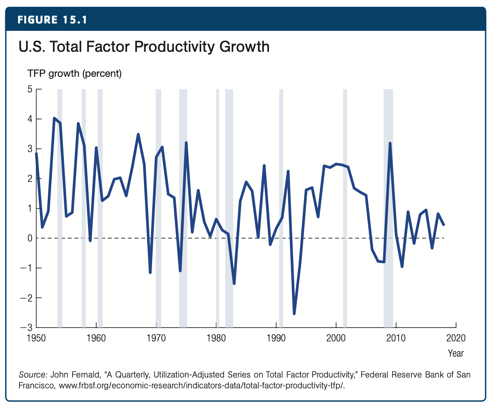
- Real business cycles models
- Solow model with TFP shocks.
- TP fluctuates over time
Internet (+)
Institutions / Taxes (-)
Source: Macroeconomics, Jones, 2021
Real Business Cycle Models
- Solow model solution:
\(y^*=\bar{A}^{\frac{3}{2}}(\frac{\bar{s}}{\bar{d}})^{1/2}\)
Real because we are not speaking in nominal terms.
- Positive shocks to TFP lead to a boom.
- Negative shocks lead to a decline.
- Yields powerful insights, but what happened in 2009 and 2001?
Source: Macroeconomics, Jones, 2021
Real Business Cycles to DSGE
RBC models led to an explosion of additional research as economists sought to enrich models to include shocks and explain further variables.
Modern DSGE models are divided into three categories:
Endogenous Variables
Shocks
Mechanics of economy that affect the way shocks impact endogenous variables over time.
Endogenous Variables
Familiar already:
GDP
Consumption
Investment
Government Spending
Employment
Capital
Wages
Interest rates
Inflation
Labor Market particularly important. output = f(hours, effort)
Shocks
Exogenous variables move over time because the economy is hit by shocks
Timing:
Some are temporary and some are permanent.
Some happen now and some we know will happen in the future.
Types:
- TFP, government purchases, taxes, monetary policy, energy prices, financial frictions, price markups above marginal cost
Uncertainty:
- Around all shocks there is a level of uncertainty, statistically captured by a distribution over time. (not always symmetrical.)
Features of DSGE Models
Nominal rigitidies: In order for monetary policy to have real effects on the economy some friction must interfere with price adjustment.
- Sticky wages and sticky prices
Adjustment costs: in Solow transition dynamics the first period after a shock included the largest move back towards steady-state. Milton Friedman said monetary policy had peak effect after long and variable lags.
Heterogeneity: People and firms are not the same, different reservation wages, elasticities, etc.
Complete vs Incomplete markets: Market is segmented by time and geography.
Mathematics of DSGE Models
Solow model: savings rate is assumed constant (and exogenous).
DSGE Model: people make decisions about saving each period.
Consider a quarterly model of the past 50 years (200 quarters), a decision one period may affect the decision in a later period.
Savings today becomes investment, which becomes capital tomorrow, which affects wage rates tomorrow, which affects how much people want to work and consume tomorrow.
Even relatively simple models hard to solve.
A Stylized Approach to DSGE: Labor
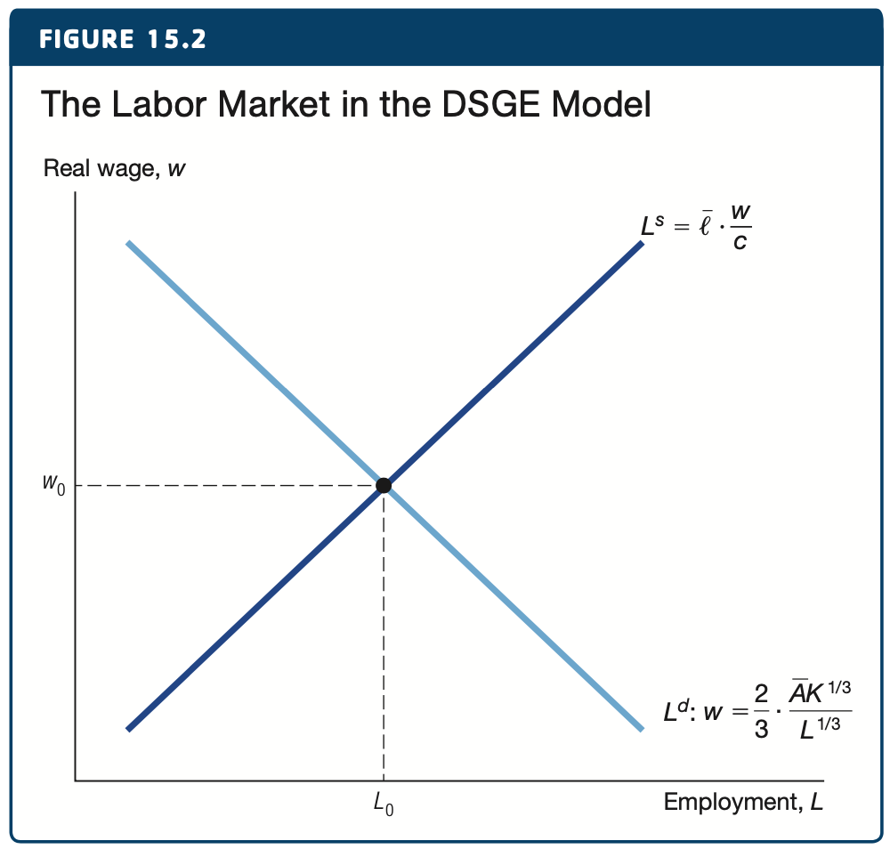
- Most DSGE Models feature at least Labor, Capital and Output markets.
- Labor Demand Curve:
Reflects the profit-maximizing of firms in deciding how much labor to hire.
Firms continue expanding employment until the marginal product of labor equals real wage (MPL = w)
\(Y=\bar{A}K^{1/3}L^{2/3}\) Labor has decreasing returns to scale.
Partial derivative, set equal to w, \(w=\frac{2}{3}\frac{\bar{A}K^{2/3}}{L^{1/3}}\)
Source: Macroeconomics, Jones, 2021
A Stylized Approach to DSGE: Labor
- Labor Supply Curve:
People choose the amount of time they work in order to maximize their utility.
Balance reward of working an extra hour against the leisure that it costs to work that hour.
\(L^s = \bar{l}\frac{w}{c}\)
\(L^s\) : the total labor supply
\(w\) : real wage
\(c\) : consumption per person
\(\bar{l}\) : governs overall labor supply
Source: Macroeconomics, Jones, 2021
A Stylized Approach to DSGE: Labor
- Equilibrium in the labor market:
Point where labor supply equals labor demand pins down
the real wage that clears the labor market
the amount of labor that gets used in production
Simplification, we assume \(\bar{c}\) , hard to solve for forward looking consumption.
Source: Macroeconomics, Jones, 2021
A Stylized Approach to DSGE: TFP Shock
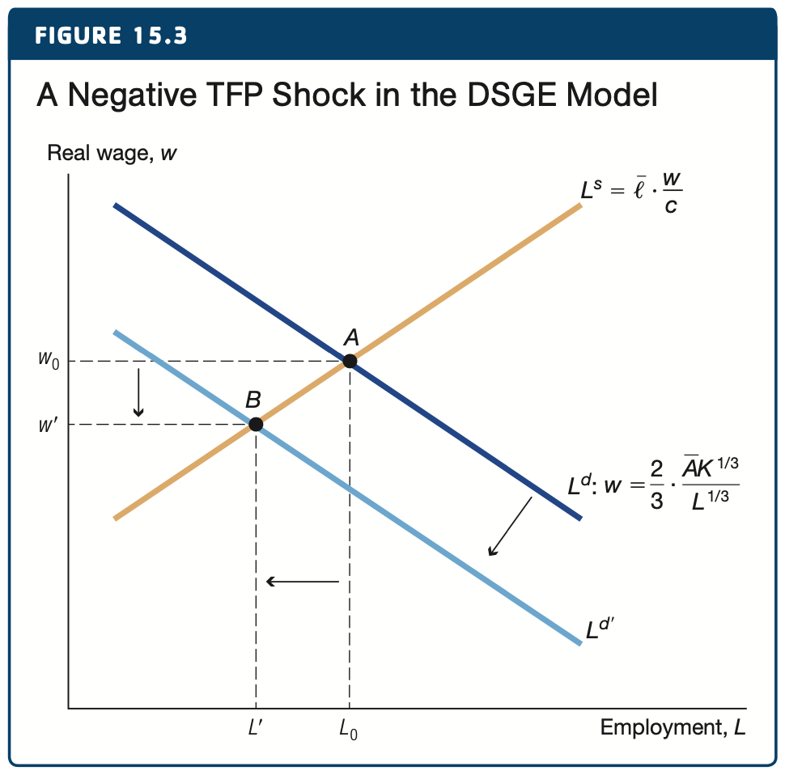
- Use DSGE framework to study a temporary negative TFP shock.
- TFP is low \(\implies\) not a good time to produce, labor demand shifts down.
- When \(\bar{A}\) is lower the output that an extra worker will produce declines \(\implies MPL \downarrow\)
- Equilibrium in the labor market goes from point A to point B. Employment falls and wages fall. This looks very much like a recession.
- Note: temporary implies little effect on consumption.
Source: Macroeconomics, Jones, 2021
A Stylized Approach to DSGE: Increased Taxes
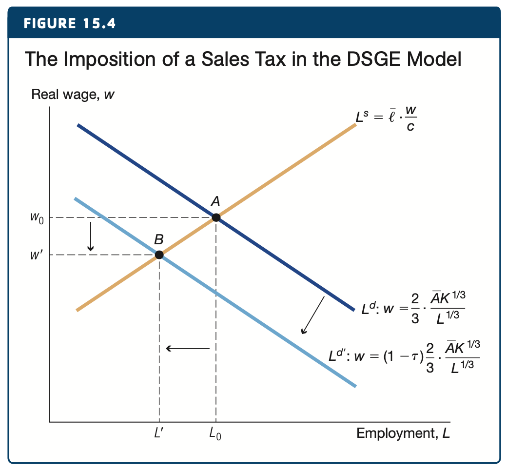
- Use DSGE framework to study a temporary rise in tax paid by firms from zero to \(\tau\) .
- Since this tax is paid by firms the marginal product of capital changes and the labor demand curve becomes: \(w=(1-\tau)\frac{2}{3}\frac{\bar{A}K^{2/3}}{L^{1/3}}\)
- TFP is low \(\implies\) not a good time to produce, labor demand shifts down.
- Equilibrium in the labor market goes from point A to point B. Employment falls and wages fall. This looks very much like a recession.
- Note: temporary implies little effect on consumption.
Source: Macroeconomics, Jones, 2021
DSGE: Rise in Government Purchases
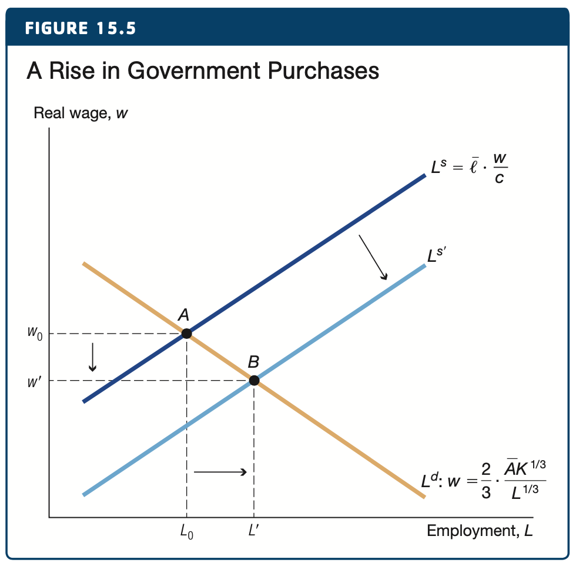
- Suppose that their is a military build up that will be financed by lump sum of taxes at an unspecified date.
- Use DSGE framework to study effects of this shock.
- Consumption: permanent income hypothesis
Must pay for this in the future so consumption is lowered.
If permanent than increase in G is equal to decrease in C.
If temporary than increase in G is greater than decrease in C.
- More generally consumption is the variable in DSGE models that accounts for the future.
- Shift from A to B not like a typical recession, lower wages, lower consumption, higher labor supplied.
Source: Macroeconomics, Jones, 2021

ECON 5120 | Scott Payseur